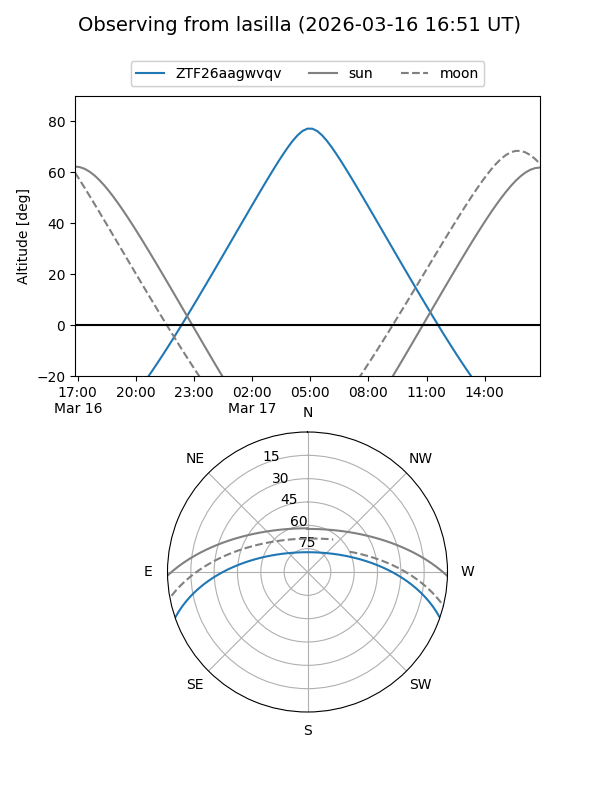
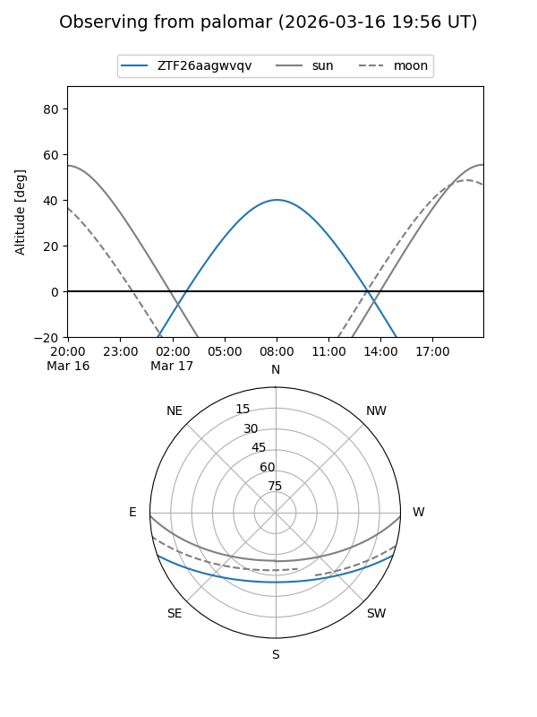

ZTF26aagwvqv
Target ZTF26aagwvqv at 2026-03-17 08:55
Aliases and brokers:
FINK: link
Lasair: link
ALeRCE: link
alt names
ZTF26aagwvqv (ztf,fink_ztf)
Coordinates:
equatorial (ra, dec) = 178.3423,-16.38941
equatorial (HMS+DMS) = 11:53:22.15,-16:23:21.87
galactic (l, b) = (283.3118,+44.25890)
Flags:
Photometry:
last ztfg=19.10
1 ztfg detections
Lightcurve
Visibility


Additional plots